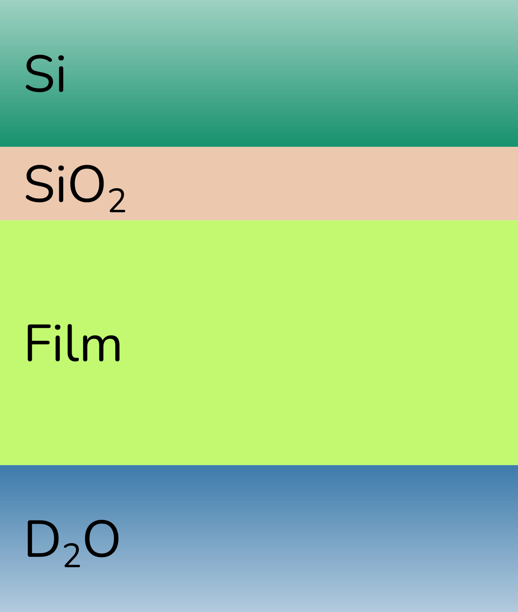

Simple fitting with a slab model#
For this purpose, we have created a simple slab model which is discussed in detail in the model-dependent analysis and reflectometry slab models sections of the ISIS Virtual Reflectometry Training Course on neutron reflectometry fitting.
The system that we are investigating consists of four layers (with the top and bottom as semi-finite super- and sub-phases). The super-phase (where the neutrons are incident first) is a silicon (Si) wafer and as a process of the sample preparation, there is anticipated to be a layer of silicon dioxide (SiO2) on this material. Then a polymer film is attached to the silicon dioxide by some chemical method and this polymer film is solvated in heavy water (D2O) which also makes up the sub-phase of the system. This is shown pictorially below, as a slab model.

Now for explaining the Analysis tab let’s look at how the EasyReflectometryApp can fit. The tab is like the previous tabs split into two windows, a graph- and a data-window.
The graph window has the same functionality as the previous tabs, so it will not be explained further. The data window has two categories: Basic and Advanced controls.
Basic controls#
The basic controls is for fitting the variables.

A: Picking the desired variable to use the slider for fine-tuning it.
B: Able to change the specific variable.
C: Setting the minimum variable for fitting.
D: Setting the maximum variable for fitting.
E: Choose the variable for fitting.
F: Fit the chosen variable (E) between the min. (C) and max. (D).
Advanced controls#
The advanced control is then for changing the calculation engine and setting the minimisation method.

A: Changing the calculation engine between
refnxandrefl1d.B: Setting the minimisation method for minimising variables.
C: Specifying the tolerance of the set minimiser.
D: Setting the maximum number of iterations(evaluations) for the minimiser to run.